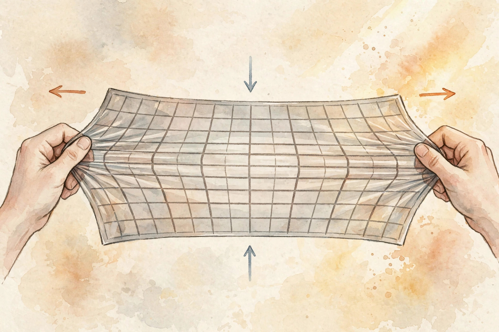
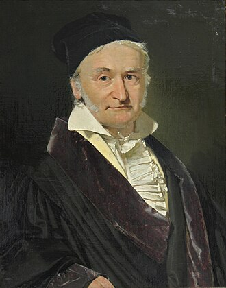

U04 · Change of variables and normalizing flows
Exact likelihood through invertible maps. One layer, two directions: forward draws samples, backward scores data, and the determinant keeps the books.
Source fact A number, formula, or claim taken directly from the lesson file content/v2/math-genmodels/lessons/u04.md, with its section tag.
Interpretation Companion commentary that connects ideas. It restates, never invents.
Illustration A toy or figure built by this companion for intuition. Numbers here are demonstrative, not lesson numbers.
U04-C08 A pointer to the lesson concept that owns the fact.
No lecture transcript exists for this unit. The lesson is locally authored bridge content, and every leaf carries PLANNED / SOURCE ATTRIBUTION PENDING. This companion narrates the lesson, not a lecture. No source video exists.
Chapter 1 · C01 to C02
Source factU04-C01 The running toy: a one-dimensional affine map x = 2z + 1 with base z ~ N(0, 1), and a two-dimensional affine coupling layer y1 = x1, y2 = x2 × s(x1) + t(x1) with s(v) = 1 + v^2 and t(v) = v. The test point is (x1, x2) = (0.5, -1.0), mapping to (y1, y2) = (0.5, -0.75).

Illustration Stretching space while the density keeps count. AI-generated watercolor.
Source factU04-C01 f(z) = 2z + 1 undoes cleanly: f^-1(x) = (x - 1)/2, and f^-1(3) = 1.0. But g(z) = z^2 folds: g(1) = 1 and g(-1) = 1. Two inputs land on one output. No inverse exists. For the coupling layer, inversion is by construction: x1 = y1, x2 = (y2 - t(y1)) / s(y1). At (0.5, -0.75): x2 = (-0.75 - 0.5) / 1.25 = -1.0. Exact recovery, verified to 1e-12 in the lesson script.
Source factU04-C02 A = [[2, 0], [0, 0.5]] has determinant 1.0. The unit square maps to a 2-by-0.5 rectangle: stretched in x, squeezed in y, area unchanged. B = [[2, 0.5], [0, 2]] has determinant 4.0. The unit square maps to a parallelogram with area 4. Areas scale by |det|.
Nugget 01 · U04-C01
What happened. The affine map undid cleanly. The square folded two inputs onto one output and could not be undone.
Why it matters. A non-invertible layer breaks the density direction silently: two preimages mean the change-of-variables formula needs a sum the code does not compute.
Principle. Design layers whose inverse is algebraic, not numerical. Test round-trips. Never trust them.
Nugget 02 · U04-C02
What happened. Determinant 1.0 kept the area. Determinant 4.0 quadrupled it. The density on the image is the base density divided by 4 at corresponding points.
Why it matters. In a flow, the determinant corrects the density for the stretching, so probability mass is conserved. A dense determinant costs O(D^3). That cost gap is the reason coupling layers exist.
Principle. Read the determinant as a volume factor: above 1 expands, below 1 contracts, zero collapses a dimension and kills invertibility.
Chapter 2 · C03 to C04
Source factU04-C03 The Jacobian of the coupling layer at (0.5, -1): dy1/dx1 = 1, dy1/dx2 = 0, dy2/dx1 = 2 × 0.5 × (-1) + 1 = 0, dy2/dx2 = 1 + 0.5^2 = 1.25. So J = [[1, 0], [0, 1.25]]. Lower triangular. Determinant 1.25, matching the lesson log-det 0.2231. At (1, 2) the Jacobian is [[1, 0], [5, 2]] with determinant 2. The volume factor changes across space.
Source factU04-C04 The change-of-variables formula: p_x(x) = p_z(f^-1(x)) × |det J_{f^-1}(x)|. At x = 1: p_z(0) = 0.3989, times 0.5 = 0.1995. The transformed law is N(1, 4): mean 1, variance 4. Its area is still 1: quadrature over [-9, 11] gives 0.999999.
Drop the correction and the result does not integrate to 1. It is not a density.

Carl Friedrich Gauss. The Gaussian base law used across this unit is named for him. Painted portrait, source: Wikimedia Commons (1840 portrait by Christian Albrecht Jensen).
Chapter 3 · C05 to C07
Source factU04-C05 Split x into (x1, x2). Leave the first half alone: y1 = x1. Transform the second half with parameters from the first: y2 = x2 × s(x1) + t(x1). At (0.5, -1): y1 = 0.5, y2 = -1 × 1.25 + 0.5 = -0.75. The functions s and t can be neural nets. They never need inverting, because they only appear as coefficients.
Source factU04-C06 The coupling Jacobian is triangular by construction, so its determinant is the product of the diagonal: 1 × 1.25 = 1.25. Log-determinant: log 1.25 = 0.2231. No matrix factorization. For a stack of 3 layers with diagonal products 1.25, 0.8, 2.0: total log-det = 0.2231 - 0.2231 + 0.6931 = 0.6931. Addition replaces multiplication in log space.
Source factU04-C07 The base is the 2-D standard Gaussian z ~ N(0, I_2). Its log-density at (0.5, -1) is -0.5 × (0.25 + 1) - log(2 pi) = -2.4629. Every flow likelihood is this number plus the log-det corrections of the layers. The base carries the shape prior. The flow carries the complexity.
Illustration Run the lesson coupling layer. Enter a point and watch the forward map, the inverse round-trip, and the log-det. The layer is the lesson layer: s(v) = 1 + v^2, t(v) = v.
x1: x2:
Nugget 03 · U04-C06
What happened. A 2x2 determinant collapsed to one multiplication: 1 × 1.25. The log-det of a stack became a sum.
Why it matters. Triangular matrices have their eigenvalues on the diagonal. Coupling layers are triangular by construction. Exact likelihood at linear cost.
Principle. A stray nonzero above the diagonal breaks the shortcut silently. Verify the triangular structure, not just the number.
Chapter 4 · C08 to C09
Source factU04-C08 The data point is y = (0.5, -0.75). Invert the coupling layer: z = (0.5, -1.0). Score the base: log p_z(z) = -2.4629. Subtract the log-det: log|det J| = 0.2231. Log-likelihood: -2.4629 - 0.2231 = -2.6860 nats. Exact. No bound, no sampling, no approximation.
Source factU04-C09 Sampling runs the flow forward. Draw z ~ N(0, I_2): say z = (0.5, -1.0). Apply the coupling layer forward: y1 = 0.5, y2 = -0.75. Density eval ran the same layer backward. One layer, two directions, two jobs. This is the reparameterization trick as an architecture: the model is a deterministic map from fixed noise to data.
Nugget 04 · U04-C08
What happened. One inverse pass, one base score, one subtraction: -2.6860. Compare the VAE bound of -3.0529 on a toy of similar scale.
Why it matters. The flow number is exact. That exactness is the product being sold: model comparison, anomaly detection, compression.
Principle. Always test the likelihood against a histogram on a toy where the truth is known. The sign error is silent and flattering.
Nugget 05 · U04-C09
What happened. The same layer scored data backward and made data forward. The base noise was the only randomness.
Why it matters. No rejection, no chains, no burn-in. The pushforward maps the base law to the data law.
Principle. Forward is generation, inverse is density evaluation. Running the inverse on base noise samples nonsense. Label the direction in the code.
Chapter 5 · C10 to C12
Source factU04-C10 In a MAF, density eval is parallel: one pass scores the point. Sampling is serial: D = 256 sequential steps. IAF flips it: sampling is one parallel pass, density eval is 256 serial steps. There is no flow with both directions parallel and fully expressive: that is the fundamental tradeoff of the family.
| density eval | sampling | |
|---|---|---|
| MAF | 1 parallel pass | 256 serial steps |
| IAF | 256 serial steps | 1 parallel pass |
| coupling | parallel | parallel |
Source factU04-C10 Choose MAF when scoring dominates (density estimation), IAF when sampling dominates (generation).
Source factU04-C11 x = 2z + 1 with z ~ N(0,1) is N(1, 4). Always. Any affine map of a Gaussian is a Gaussian. The two-mode target 0.5 N(-3,1) + 0.5 N(3,1) has two modes. No choice of slope and intercept fits both. The lesson 20,000 samples had mean 1.0 and variance 4.03: a Gaussian, as theory demands.
Source factU04-C12 A stack of 100 layers, each with diagonal factor 1e6. The determinant is (1e6)^100 = 1e600. float64 overflows at 1e308: the product is inf. The log-determinant is 100 × log(1e6) = 1381.55. Finite, exact, boring. Work in log space or drown.
Nugget 06 · U04-C10
What happened. Both directions were O(D). One was 1 step, the other 256.
Why it matters. Triangular structure gives cheap determinants, but the autoregressive dependency chains the computation in one direction. The cheap direction follows the dependency order.
Principle. Match the flow to the workload direction. Training a MAF for a generation workload gives 256 serial steps per point: correct and unusable.
Nugget 07 · U04-C11
What happened. One affine layer, one Gaussian base: N(1, 4) forever. Two modes needed, one delivered.
Why it matters. Affineness is preserved under composition. Nonlinearity must enter through s, t, or activations to break the Gaussian family. The single-layer fit covers both modes with one wide Gaussian, and samples fall between the modes where the truth has a valley.
Principle. Expressivity is a property of the composed map, not a vibe. Depth alone does not help without nonlinearity.
Nugget 08 · U04-C12
What happened. The determinant said inf. The log-determinant said 1381.55. Same math, different floats.
Why it matters. A second constraint hides beside overflow: the condition number. diag(1e6, 1e-6) has condition number 1e12. Double precision has 16 digits. Four digits of accuracy remain.
Principle. Accumulate log-determinants always. Clamp the log-scale outputs of s networks. Monitor the log-det range per layer.
Practice
Source fact The lesson ships a unit assessment: 6 breadth-recall questions, 2 deep ladders of 5 follow-ups, 2 analytical exercises, 1 implementation debug (a flow reporting -2.2398 instead of -2.6860), and 2 changed-constraint scenarios. Keys live in lessons/keys/keys-u04.md. The lab pointer lists 6 hands-on exercises in labs/lab-u04.md.
Source fact Lesson figures referenced: u04_f01_invertibility.png (z^2 folds, 2z+1 inverts), u04_f02_density_transform.png (base to N(1,4), area conserved), u04_f03_triangular_jacobian.png (det as diagonal product, O(D)), u04_f04_computational_asymmetry.png (MAF/IAF cheap directions), u04_f05_chapter.png (exact log-likelihood -2.6860). The charts on this page re-plot the lesson numbers above.
Wisdom index